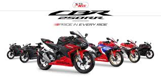

Honda CBR250RR adalah salah satu motor sport 250cc yang memiliki desain agresif dan performa tinggi. Motor ini terkenal dengan handling yang stabil serta teknologi modern seperti riding mode dan throttle by wire.

Honda CBR250RR merupakan pilihan yang tepat bagi pecinta motor sport yang menginginkan kombinasi antara performa, desain, dan teknologi modern.